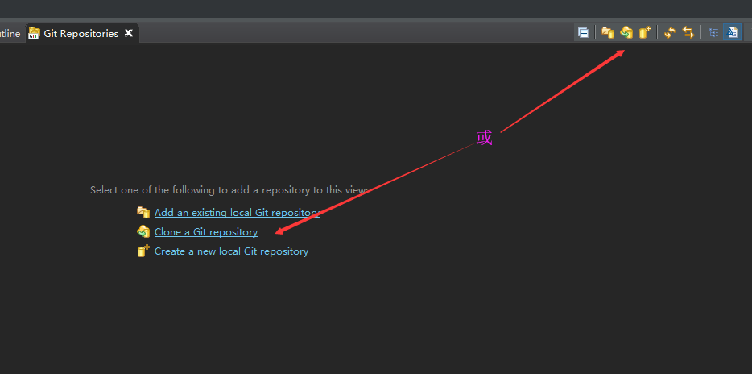
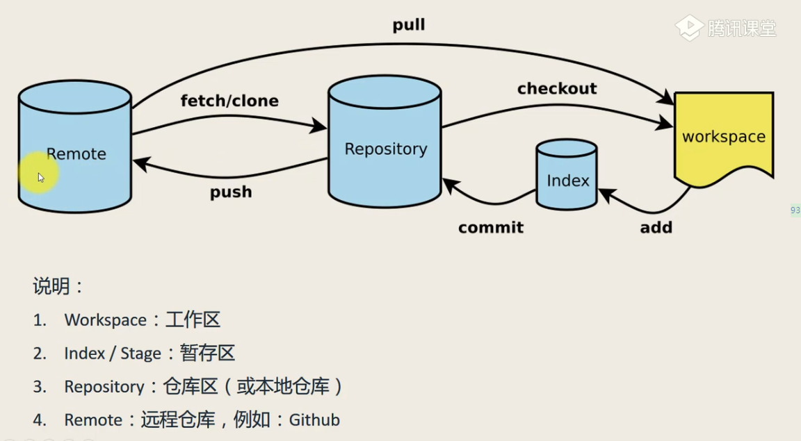
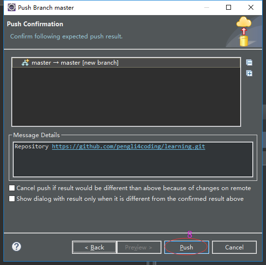

准备工作
提供SSH2钥匙
使用Eclipse生成本地密匙文件：window->preference->general->network connections->ssh2->点击 Generate RSA KEY->点击Save private key 生成并保存本地密匙
生成后的密匙文件所在位置是：C:\${user.home}\.ssh 目录。密匙文件名为：id_rsa 和id_rsa.pub。其中 id_rsa.pub 文件是公钥密匙，需要手工添加到 Github 密匙库中
在Github中添加添加上一步中生成的公钥
在C:\${user.home}\.ssh目录（如C:\Users\Administrator\.ssh）中找到id_rsa.pub文件，把里面的内容复制出来
打开Github网站添加SSH密钥
在Eclipse上添加ssl版本号
克隆远程仓库到Eclipse中
远程仓库https://github.com/pengli4coding/learning.git是一个空仓库
打开Git仓库视图：window->Show View->Git Repositories

工作区（Workspace）、暂存区（Index/Stage）、本地仓库（Repository）、远程仓库（Remote）

把Eclipse中的项目分享到工作区（Workspace）中
这一步操作一般只是在创建项目的时候分享一次，其余大部分时间都是提交或者拉取内容

把工作区（Workspace）中的文件变更提交到暂存区（Index/Stage）
这里的文件变更包括文件创建、修改、删除，也就是对文件的一切操作了
待更新
把暂存区（Index/Stage）中的文件变更提交到本地仓库（Repository）
把本地仓库（Repository）中的文件变更提交到远程仓库（Remote）

把远程仓库（Remote）中的文件变更拉取到本地本地仓库（Repository）
把本地仓库（Repository）中的项目导入到Eclipse中
通常这种情况多发生在第一次克隆远程仓库或者拉取pull的时候有新的项目被创建
第一次克隆远程仓库的时候，需要导入项目到Eclipse中
拉取pull的时候有新的项目被创建，需要导入项目到Eclipse中